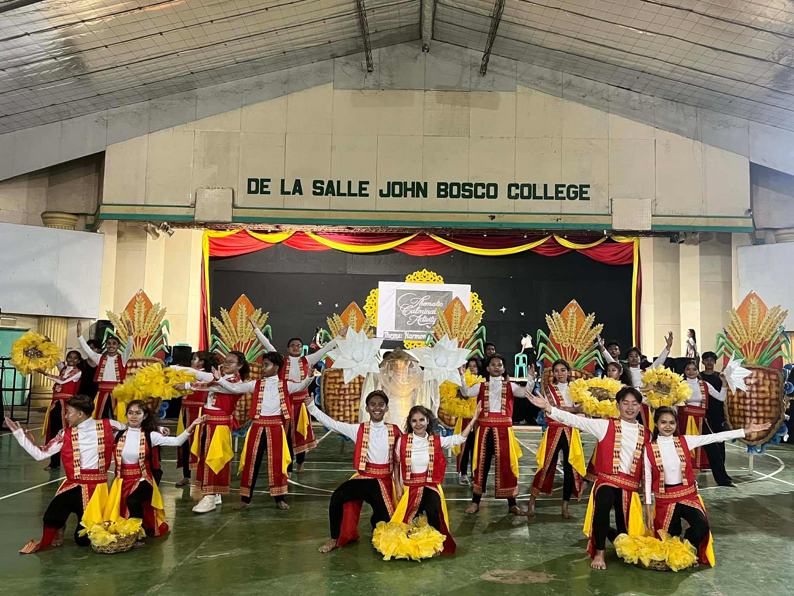

Latest Articles & Announcements
Stay updated with the latest news, student achievements, campus events, academic activities, and important announcements from De La Salle John Bosco College.

Stay updated with the latest news, student achievements, campus events, academic activities, and important announcements from De La Salle John Bosco College.
Discover what's happening around the DLSJBC community.
De La Salle John Bosco College officially opens admissions for School Year 2026–2027. Prospective students are invited to begin their Lasallian journey by submitting their admission requirements and completing the enrollment process.
Applications are now being accepted for Preschool, Elementary, Junior High School, Senior High School, College, and TESDA-accredited TVET programs. The College continues its commitment to providing quality education rooted in faith, service, and academic excellence.
Applicants are encouraged to visit the Admissions Office during regular office hours or view the complete enrollment requirements and procedures through the Admissions page of the website.

The First-Year College Mini Badminton Tournament officially concluded after several weeks of exciting matches, bringing together freshmen students from different college programs in a friendly display of athleticism and sportsmanship.
Participants showcased determination, teamwork, and discipline throughout the tournament while receiving enthusiastic support from fellow students, faculty members, and staff. The event encouraged healthy competition and strengthened friendships among the first-year community.
The tournament concluded with an awarding ceremony recognizing the champions, runners-up, and outstanding players. DLSJBC congratulates all participants for making the event a memorable celebration of unity, sportsmanship, and Lasallian excellence.

Students from various departments showcased their talent and creativity during the annual DLSJBC Cultural Dance Festival. The event highlighted traditional Filipino dances alongside modern performances that reflected the diversity and unity of the Lasallian community.
Months of preparation were evident as each group delivered colorful performances featuring coordinated choreography, vibrant costumes, and captivating stage presentations. Faculty members, parents, and fellow students gathered to cheer for every participating team.
Beyond the competition, the festival promoted confidence, teamwork, and appreciation for Filipino culture. The event concluded with an awarding ceremony recognizing outstanding performances, choreography, and overall presentation.